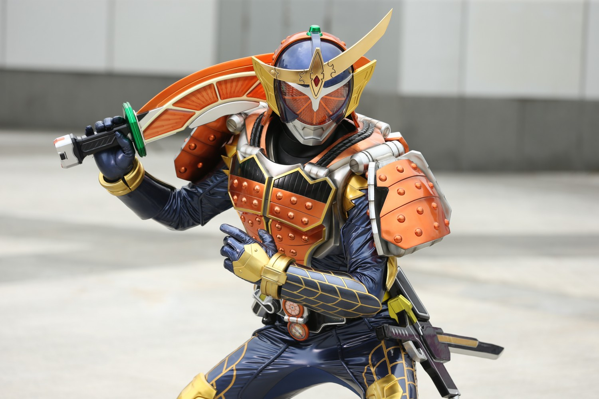
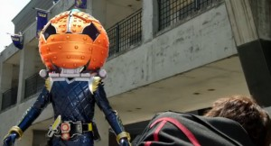
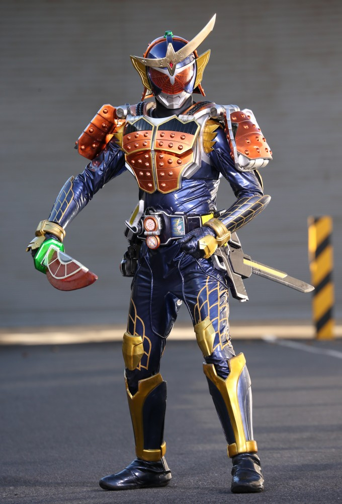
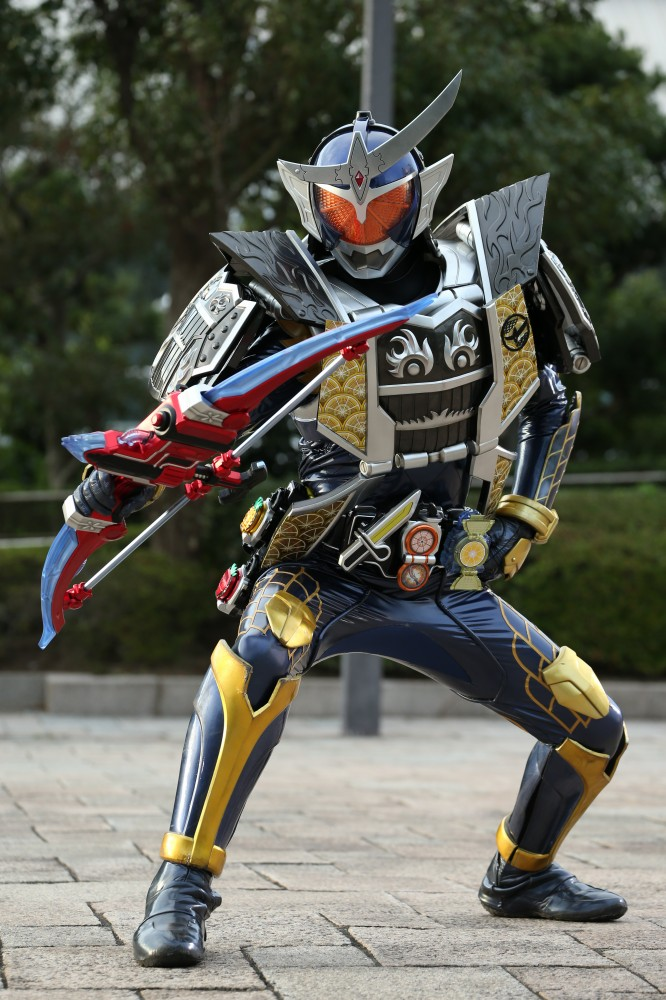
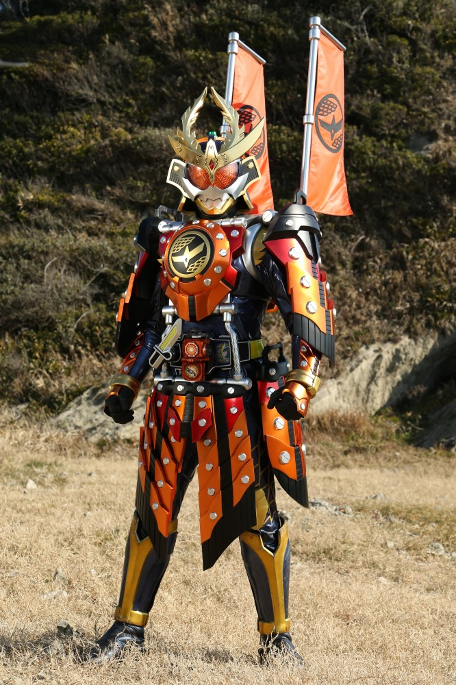
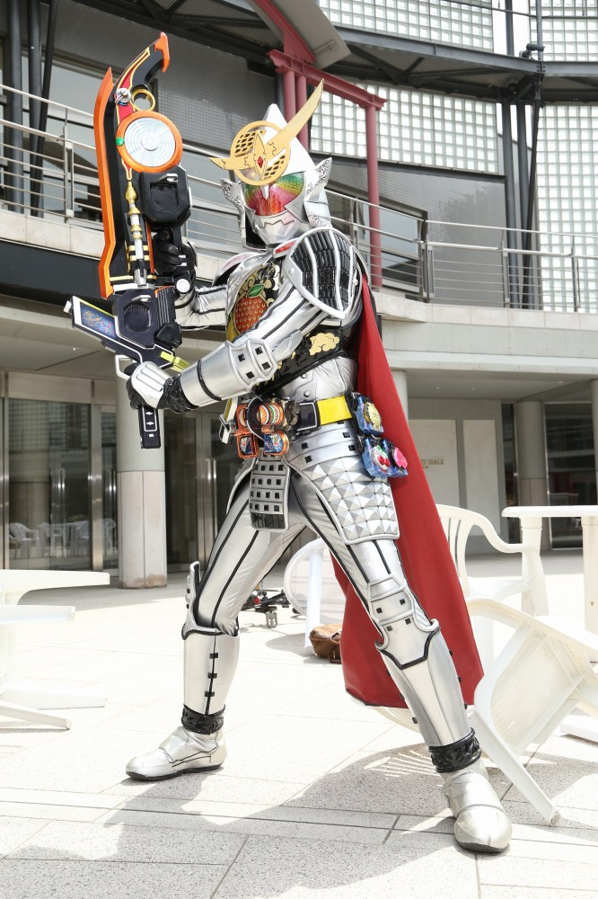

2013年から放送された「仮面ライダー鎧武」に登場する仮面ライダー
変身者は葛葉紘汰。フルーツを模した錠前型のアイテムであるロックシードと戦極ドライバーを使い変身する。
初見時の変身の際のインパクトが強い。
身長：203cm 体重：105kg パンチ力：6.7t キック力：10.2t ジャンプ力：ひと跳び28m 走力：100mを5.9秒程度

ロックシードのボタンを押すことでロックが解除され、上空にクラックと呼ばれる穴が開かれる。
そのクラックからロックシードに対応した果実型の鎧が召喚される。
ドライバーにロックシードを装着し、小型の剣状のパーツでロックシードを展開することで
鎧が変身者の頭部に装着し、展開することで変身する。
変身に使用するアイテム。
ヘルヘイムの森と呼ばれる異世界で群生している果実が変化したもの。
ロックシードにはランクがつけられており、ランクが高いほど強い。
そのまま使う分には害がないことがほとんどだが、
変化する前の果実を食べると、インベスという怪物に変貌してしまう。

オレンジアームズ
「オレンジ」のロックシードで変身
鎧武の基本形態
攻守ともに優れており、無双セイバーと大橙丸の２つの刀を使い戦う。
なんか強い

ジンバーレモンアームズ
「オレンジ」と「ジンバーレモン」ロックシードで変身
ゲネシスコアユニットをドライバーに装着させることで、
ジンバーとつく特殊なロックシードを装着させることができる。
レモンはランクが高く基礎能力が高い。
強敵相手にもある程度食らいつける。

カチドキアームズ
「カチドキ」ロックシードで変身
全身を覆う重装甲は生半可な攻撃を通さない。
背中に装備した旗は武器になり、橙色のエネルギーを放つ。
これでも十分強い。

極アームズ
「極」と「カチドキ」ロックシードで変身
銀の鎧にはすべてのロックシードの力が宿っている。
そのため、すべてのロックシードの専用武器を扱うことができる。
デメリットもあり、使用しすぎると、人間ではなくなってしまう。
仮面ライダー一覧